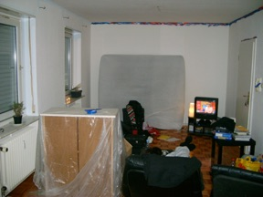
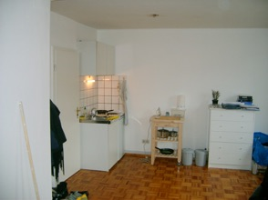
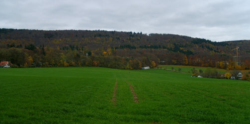

Settled for good
Well as you know I’ve moved into my flat. And since my parents brought some of my stuff when they visited a couple of weeks ago I was almost set. However there were two major points of concern regarding my housing situation, which I needed to solve before I really felt settled, and as the title of this blog entry indicates, these major concerns are no longer there. The first thing that I really liked to fix was the awful paint job the guy who lived here before me had ‘created’. This Mette and I got done last week. From the 8th until the 15th of november Mette was visiting, which was really nice. Both to be able to talk to her and see her every day, but also to show her Heidelberg and my new life down here.

Well we went to the ‘einkaufssentrum’ in Rohrback south (which is like 10 minutes walk from my flat) tuesday, where we bought some paint. Wednesday and thursday Mette painted most of the apartment when I was working at the institute and friday we finished the job together. Also friday the IKEA delivery arrived. Wednesday evening Mette and I went to IKEA Walldorf to fix the second major concern, namely that I only had an air bed - I really needed a bed, even though my air bed is actually surprisingly good, considering the price. We found a bed in IKEA (among a lot of other stuff) which was delivered friday around noon. When the painting was done we build the bed (Lego for adults;) and when it became dark friday afternoon i was officially settled down for good in my new flat!Of course we didn’t only paint and work.

We also enjoyed the late autumn in Heidelberg, went up and down Hauptstrasse a couple of times and walked up the mountain to enjoy the view of the city from above. Here we found an ‘Aussichtspunkt’ which was in memory of the soldiers fallen near Heidelberg in the two world wars (but also in memory of soldiers fallen in war in general). On the huge stones into which the soldier names were carved there were quite some ‘Schmidts’ - probably not a coincidence since we’re in Germany;) Since Mette went back to Denmark sunday afternoon, I haven’t really done anythin except working. I feel I have some catching up to do since I ‘worked from home’ a couple of days when Mette was visiting. So for the moment my calender just says work, eat, work, sleep, work, eat, work, sleep ... you get the picture. But I promise that I’ll add a new entry as soon as something new and interesting happens...
Maybe next time it will be with a bit of x-mas flavor... well ... till then!

Wednesday, 19 November 2008
At the memory view-point
